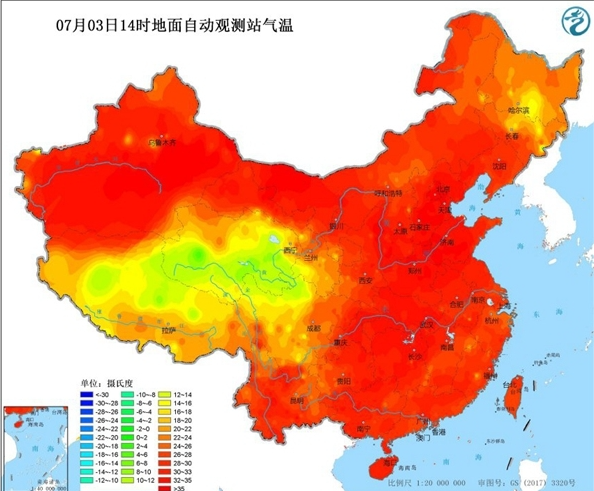

今天起，华北、黄淮一带的高温天气发展迅速，京津冀及周边地区午后气温普遍在 35℃ 以上， 部分城市最高气温接近 40℃。在强烈日照和偏南风的共同作用下，户外体感闷热明显。
气象部门预计，未来两天高温范围和强度仍将继续扩大，部分地区地表温度可能突破 60℃， 公众需尽量避免午后时段长时间在户外暴晒，注意防暑降温，多补水。

图：07 月 03 日 14 时全国地面自动观测站气温分布示意图
未来几天高温走势
预计明天起，高温核心将继续维持在华北南部和黄淮一带，部分地区最高气温可达 38～40℃， 高温天气将持续到本周末。气象专家提醒，企事业单位可根据预报合理安排作息时间， 户外作业人员要注意缩短连续工作时长。
同时，城市需关注用电负荷上升带来的压力，相关部门要提前做好电力调度和设备维护工作， 确保居民生活和防暑降温设施的正常运行。